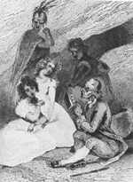
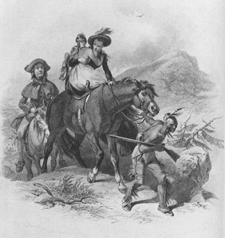
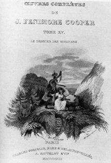
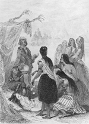

Last of the Mohicans, published in 1826, was received enthusiastically by an audience steeped in heated political debate about removal of American Indians to West of the Mississippi, a move supported by Thomas Jefferson, debated during John Quincy Adam's presidency (1824-1828) and disastrously carried out by Presidents Andrew Jackson and Martin Van Buren in the 1830s (McWilliams xiv). The novel was "an instantaneous best-seller and established its author as the first significant American literary figure. However, its critical reception was not so enthusiastic. The main complaints were that stylistically the book was badly written, repetitive, and lacked pace and characterization, even if its historical veracity was praiseworthy" (Barker and Sabin 27).
Specific among these complaints was the charge that Cooper idealized his American Indian characters to such a degree that they failed to resemble "real Indians" at all. While there is plenty in Last of the Mohicans to support these charges, critics have often overlooked that Cooper demonized some of his Indian characters as well. In Last of the Mohicans Chingachook and Uncas are idealized-- they speak figuratively and metaphorically, their physical descriptions reflect notions of nobility, and their actions are always selfless and pure. Examine the following description of Uncas:
At a little distance in advance stood Uncas, his whole person thrown powerfully into view. The travellers anxiously regarded the upright, flexible figure of the young Mohican, graceful and unrestrained in the attitudes and movements of nature. Though his person was more than usually screened by a green and fringed hunting shirt, like that of the white man, there was no concealment to his dark, glancing, fearful eye, alike terrible and calm; the bold outline of his high haughty features, pure in their native red; or to the dignified elevation of his receding forehead, together with all the finest proportions of a noble head, bared to the generous scalping tuft.
Phrases like "graceful and unrestrained in the attitudes and movements of nature" reveal Cooper's tendency to equate American Indians with nature, both equally endangered by European civilization's advance. Moreover, like the virgin land that he describes as unmolested before the white man, so Cooper envisions the Indian as equally pure. Here Cooper encodes this essentializing in Uncas' physical description; his features are "pure in their native red," and his head, commonly used as a revealing characteristic of a character's personality, has a "dignified elevation" and is "noble" with the "finest proportions."
On the other hand, Magua and the other Hurons are demonized; they exhibit subhuman tendencies such as an unnatural reveling in violence and the habit of eating their meat raw. For example, after Magua's band kills a straggling fawn, one Huron eats it: "Without any aid from the science of cookery, he was immediately employed, in common with his fellows, in gorging himself with this digestible sustenance" (112). Moreover, in one particularly touching scene, a Huron warrior who desired a woman's "gaudy" shawl, took her baby out of her arms, and killed it: "The savage spurned the worthless rags, and perceiving that the shawl had already become a prize to another, his bantering but sullen smile changed to a gleam of ferocity, he dashed the head of the infant against a rock, and cast its quivering remains to her very feet" (205)
Within Last of the Mohicans, therefore, the polarities of sentimentalizing (Chingachook and Uncas) and demonizing (Magua and the Hurons) are constantly engaging each other in a battle whose eventual triumph would dictate the image of the American Indian to the American culture. While this battle is never reconciled, it had far-reaching consequences for American Indian characterization in American fiction.
All the following images and captions are from Cooper, James. Last of the Mohicans Albany; State University of New York Press, 1982.
Scanned and arranged by Adriana Rissetto 12/96.
 |
"Hawkeye and Chingachook conversing by the Hudson on the history and destiny of the Indian in North America by an unidentified painter" (xiv). |
|  | "[T]he sacred song proceeded...duly attended to by the methodical David." Note an angelic Uncas in the background. Drawing and engraving by Tony Johannot. |
|  | "Placing Alice, then, on the same animal as Cora, [Magua] seized the bridle and commenced his route by plunging deeper into the forest." Drawn by F.O.C. Darley and engraved by James Smillie. |
 |
"Come, [Magua] said...'the wigwam of the Huron is still open. '"Drawing and engraving by Tony Johannot. |
|  | "Woman," he said, "choose; the wigwam or the knife of le Subtil!" Drawing and engraving by Tony Johannot. |
|  | "Six Delaware girls...occasionally strewed sweet scented herbs and forest flowers on a litter of fragrant plats, that...supported all that now remained of the ardent, high souled, and generous Cora." Drawing and engraving by Tony Johannot. |
{kind=link}
{kind=link}
{kind=link}
{kind=link}